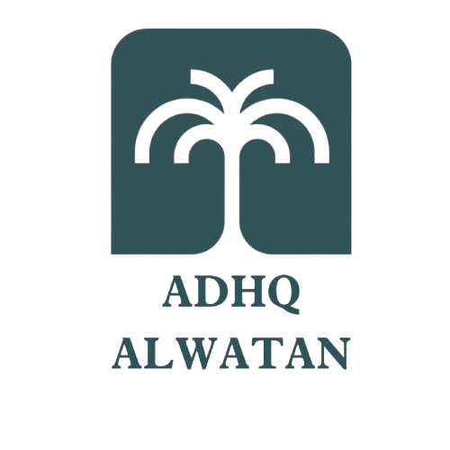
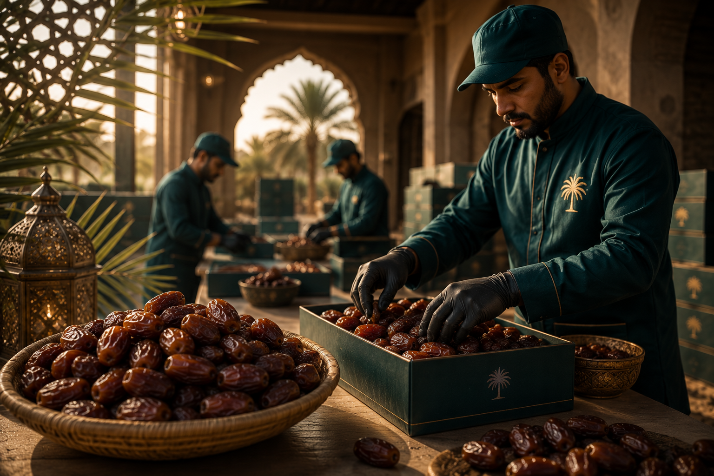
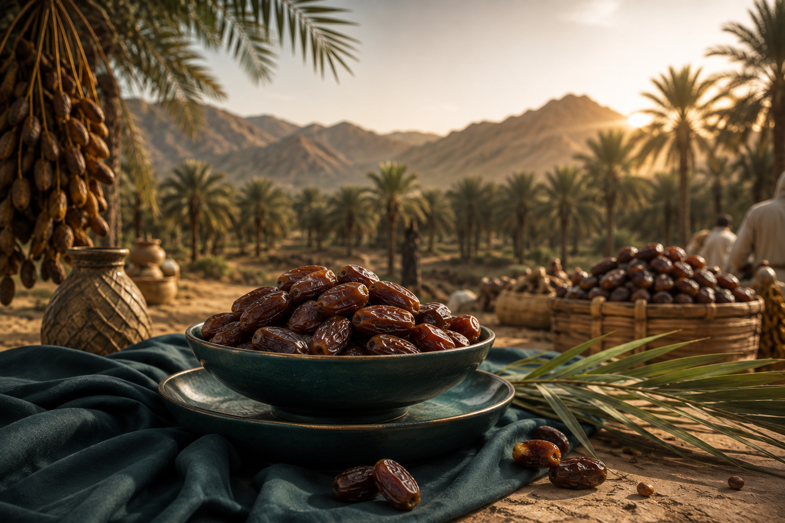
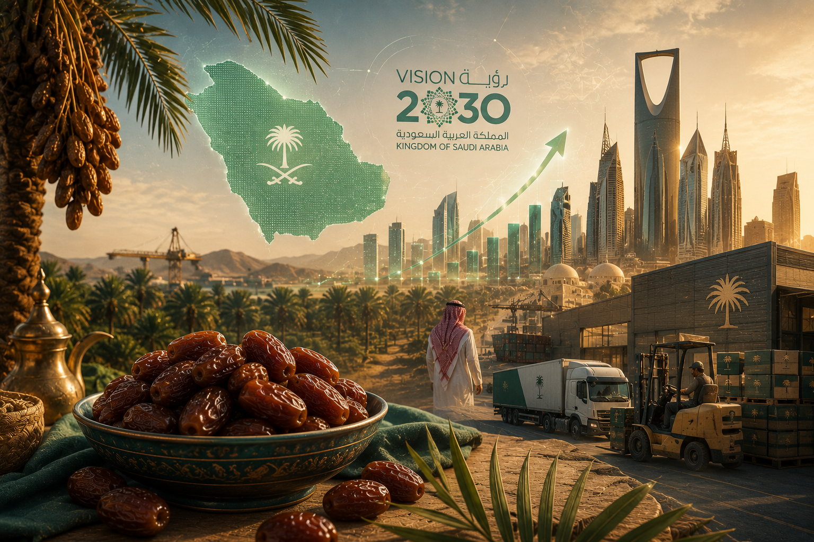
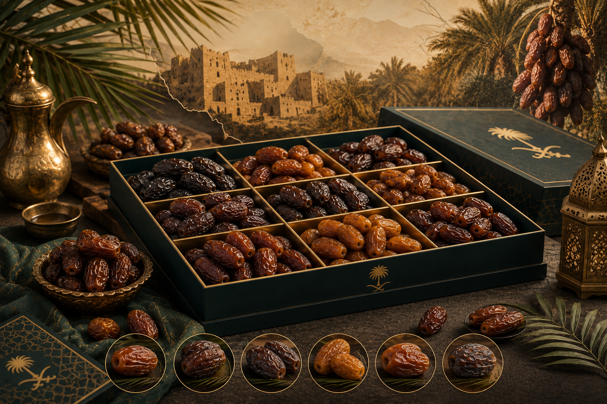

من نخيل المملكة العربية السعودية، نصدر الجودة إلى كل ركن في العالم بأسلوب احترافي ومعايير عالمية.


عذق الوطن ليست مجرد شركة للتمور؛ نحن حراس لتراث يمتد عبر الأجيال. من قلب المملكة العربية السعودية، نسخر قوة أراضينا الخصبة في القصيم والمدينة المنورة لنقدم لكم 'ذهب الصحراء'. التزامنا يبدأ من الشجرة وينتهي بابتسامة على وجوه عملائنا حول العالم، مع الحفاظ على أعلى معايير الجودة والاستدامة التي جعلتنا في طليعة الشركات المصدرة للتمور السعودية عالمياً.
نؤمن بأن كل تمرة تحكي قصة من العمل الجاد والشمس والمياه النقية. لهذا السبب نستخدم أحدث التقنيات في الفرز والتعبئة للحفاظ على الطعم الطبيعي والقيمة الغذائية العالية. تضمن شبكتنا العالمية وصول منتجاتنا الفاخرة إلى مائدتك طازجة وصحية ومليئة بكرم الضيافة السعودية الذي لا يضاهى.
نسعى جاهدين لترسيخ مكانة التمور السعودية كخيار أول عالمياً، وأن نكون الاسم الأكثر ثقة في تصدير التمور، متمثلين قيم الجودة والأصالة في كل سوق دولي نصل إليه.
أن نكون مصدراً موثوقاً للتمور السعودية الفاخرة عالمياً من خلال منظومة متكاملة تجمع بين التميز الزراعي والدقة التشغيلية، بما يضمن تقديم منتجات استثنائية تبني الثقة.
توفر عذق الوطن منظومة متكاملة بمعايير عالمية استثنائية لتجارة وتصدير التمور السعودية، نضمن من خلالها التميز المطلق من قلب مزارع النخيل وصولاً إلى كافة أنحاء العالم. يعتمد نظامنا الاحترافي على الثقة والدقة وأعلى معايير الجودة الدولية لتلبية تطلعات شركائنا العالميين وتحقيق ريادة حقيقية في السوق الدولي.
نحن نقود السوق العالمي في توريد وتصدير أجود أصناف التمور السعودية الفاخرة. عملية التصدير لدينا هي تحفة لوجستية تخضع لأشد بروتوكولات سلامة الغذاء الدولية ومعايير الآيزو، لنضمن وصول 'ذهب الصحراء' إلى الموائد العالمية بكامل رطوبتها وطعمها الملكي الأصيل الذي لا يضاهى.
باستخدام أحدث التقنيات البصرية واليدوية، نقوم بعمليات فرز دقيقة تعتمد على الحجم، محتوى الرطوبة، والجودة الجمالية. يضمن هذا التدريج الصارم تقديم شحنات متجانسة وموحدة تلبي المتطلبات الراقية لكبار المستوردين وسلاسل التجزئة الفاخرة في جميع أنحاء العالم.
التعبئة لدينا هي نقطة التقاء الحماية بالفن. نوفر خيارات إبداعية متنوعة، من صناديق الهدايا الفاخرة ومجموعات كبار الشخصيات إلى عبوات التجزئة الصغيرة الجاهزة للعرض. صُممت كل عبوة هندسياً للحفاظ على سلامة التمور مع إبراز صورة العلامة التجارية الأنيقة التي تأسر المستهلكين.
الزمن يتوقف في مرافقنا المتقدمة للتحكم المناخي. نحن ندير مستودعات عالية التقنية تتحكم في الحرارة والرطوبة بدقة متناهية، مما يوقف عملية التقادم الطبيعية للحفاظ على تمورنا طازجة، طرية، وغنية بالقيم الغذائية طوال فترة تخزينها بالكامل وكأنها قُطفت للتو.
تجاوز الحدود العالمية هو تخصصنا. نحن ندير سلسلة الإمداد بالكامل، وننسق الشحن البحري والجوي السلس مع معالجة كافة وثائق التصدير، الفواتير التجارية، والشهادات الصحية الدولية، مما يضمن وصولاً آمناً وخالياً من القلق إلى وجهتكم النهائية في أي مكان.
مجهزة بقدرة تشغيلية هائلة، تلبي عذق الوطن الطلبات واسعة النطاق لكبار الموزعين وتجار الجملة العالميين. نحن نضمن الاتساق في الجودة وسلسلة إمداد مستقرة طوال العام، مما يضمن عدم تفويت عملكم لأي فرصة موسمية أو طلب مفاجئ في الأسواق الدولية.
نحن نمكن علامتكم التجارية من التألق. تتيح لكم خدماتنا الكاملة للعلامة الخاصة تخصيص المنتجات بشعاركم وتصميمكم الفريد. من طباعة الملصقات وتوليد الباركود إلى الامتثال لمتطلبات بلد الاستيراد، نحن نتولى التفاصيل لتتمكنوا من التركيز على غزو أسواقكم.
الجودة هي ركيزتنا التي لا تقبل المساومة. نحن نطبق معايير سلامة الغذاء الدولية الصارمة ونجري اختبارات مخبرية دقيقة قبل كل شحنة على حدة. يضمن ذلك أن تمورنا ليست لذيذة فحسب، بل آمنة، صحية، وذات جودة فائقة تفوق توقعات المستهلكين.
تبدأ رحلتنا في تقديم أجود أنواع التمور بالاختيار الدقيق لأجود أنواع التمور من مزارعنا، حيث يتم فرز كل تمرة يدوياً للحفاظ على أعلى معايير الجودة العالمية وضمان التميز.
نولي عناية فائقة في تغليف تمورنا باستخدام أساليب مبتكرة تلتزم بأعلى المعايير العالمية من حيث الجمال والحداثة والصحة لضمان تقديم منتج يليق بعملائنا.
تُخزن التمور المختارة في مرافق تبريد حديثة جداً للحفاظ على نضارتها وقيمتها الغذائية ثم تُغلف بأحدث التقنيات لضمان تقديمها في أفضل حالة غذائية وجمالية.
استكشف التراث العريق، الفوائد الصحية المذهلة، والأثر العالمي لذهب الصحراء السعودي عبر مقالاتنا المتخصصة.
لطالما كانت التمور هي العمود الفقري للحياة العربية لآلاف السنين، تعرف على تاريخ هذه الشجرة المباركة...
استكشف القصةلماذا تعتبر التمور وجبة غذائية كاملة لجسم الإنسان، وما هي المعادن والفيتامينات التي توفرها...
تعرف أكثر
كيف تقود المملكة العالم في تصدير التمور عالية الجودة، ودور هذا القطاع في تحقيق رؤية 2030...
اقرأ التحليل
من العجوة إلى السكري والمبروم، تعرف على كيفية التمييز بين أفضل الأنواع الفاخرة في السوق...
شاهد الأنواعنحن لسنا مجرد مصدرين للتمور؛ نحن شريكك الاستراتيجي في نقل التراث السعودي بمعايير عالمية تضمن لك الريادة في سوقك المحلي والدولي.
نطبق أعلى معايير سلامة الغذاء الدولية في كافة مراحل الإنتاج، من المزرعة وحتى وصول الشحنة النهائية إليكم.
تمتلك عذق الوطن شبكة لوجستية ضخمة تضمن وصول تمورنا الطازجة إلى أي مكان في العالم بدقة واحترافية.